Colorado Shot
Welcome to Colorado
Are you a photographer? Are you from colorado? Loking to find the perfect place to do a photoshot? Or are you just bored and what to find new places near you? this place is for you we show you the best places to expore in Colorado.
Rhino Distric
Nicknamed “RiNo,” the trendy River North Art District features contemporary art galleries and hip concert venues in revamped industrial buildings. Food halls include Denver Central Market and The Source, a buzzy indoor venue with eclectic products and a bar for small plates and craft beer. 📍
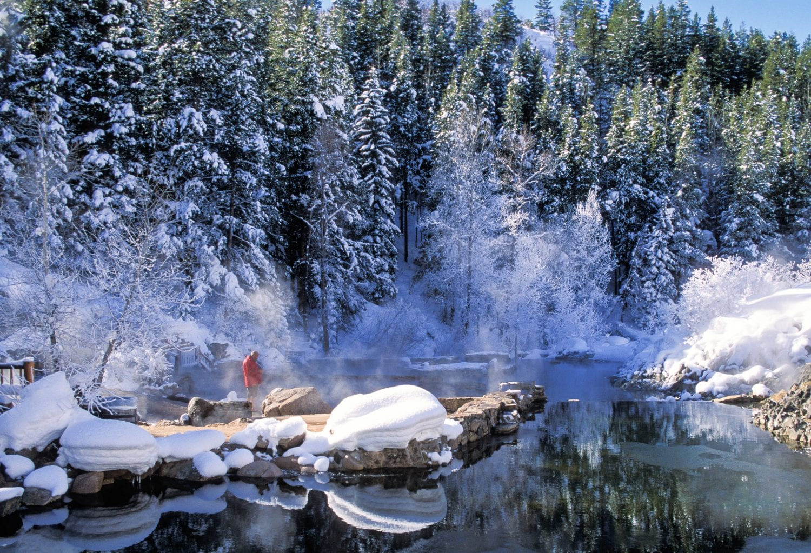Straberry Hot Springs
Rustic quarters in an unassuming forest resort featuring outdoor pools with hot spring water. 📍
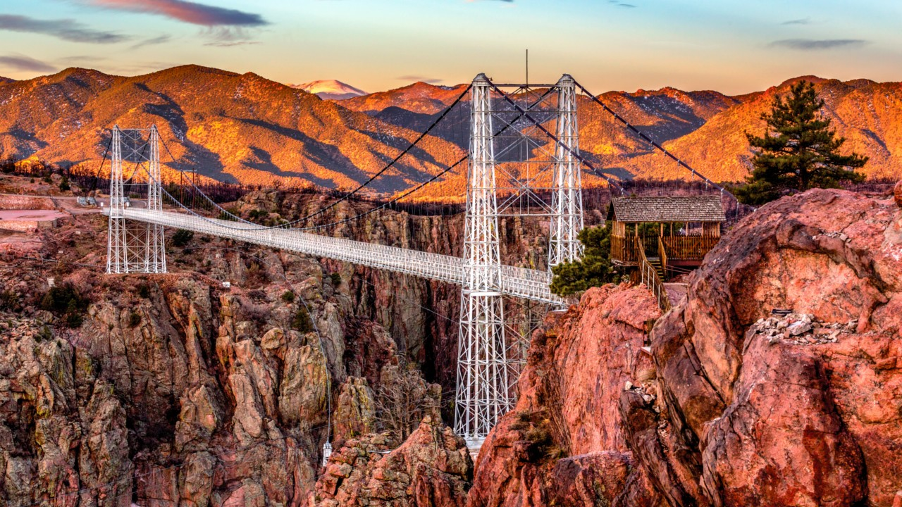Royal Gorge
The Royal Gorge is a canyon of the Arkansas River located west of Cañon City, Colorado. The canyon begins at the mouth of Grape Creek, about 2 mi west of central Cañon City, and continues in a west-northwesterly direction for approximately 6 mi until ending near U.S. Route 50. 📍

Colorado Dunes
Great Sand Dunes National Park and Preserve is in southern Colorado. It’s known for huge dunes like the towering Star Dune, and for the seasonal Medano Creek and beach created at the base of the dunes 📍
Wonder Wonder
Wonder Wonder is a new form of experiential entertainment that intends to bring out the weird, wild, and wonderful in ways you’ve never seen before. Our mission is to create an immersive one-of-a-kind experience that is as engaging as it is inspiring. Part art exhibit, part photography opportunity — each room is meant to tap into people’s creativity and curiosity while providing a welcoming environment for all experience-goers. 📍
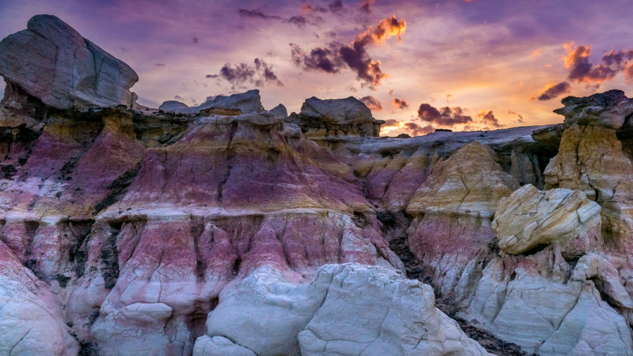Painted Mines
El Paso County parks, trails, and open spaces remain open during the COVID-19 crisis. Residents are encouraged to use park sites while maintaining required physical distancing. County Parks has noted exceptionally heavy use of the Paint Mines Interpretive Park. 📍
 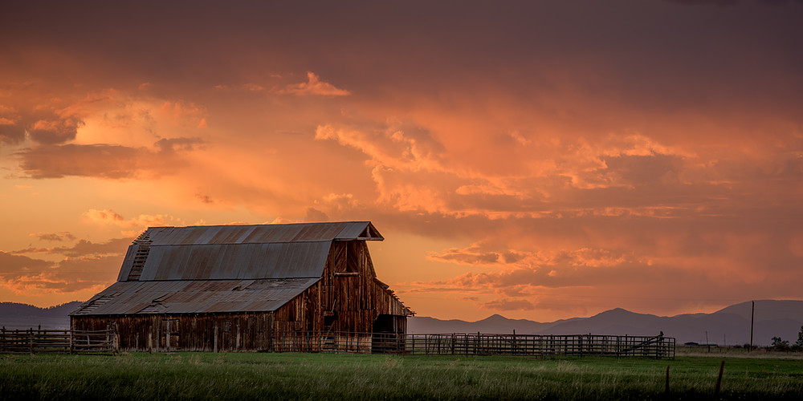
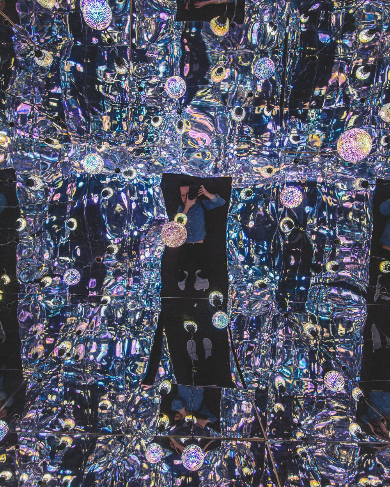
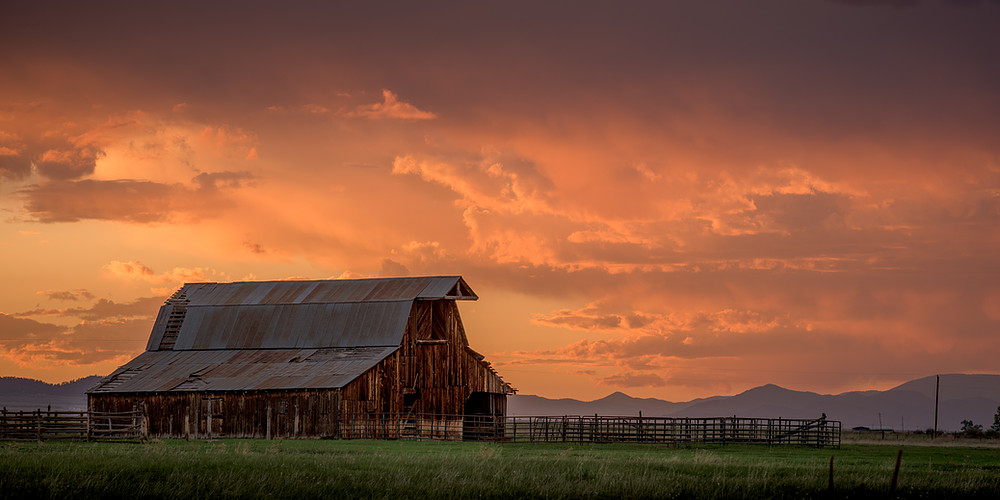
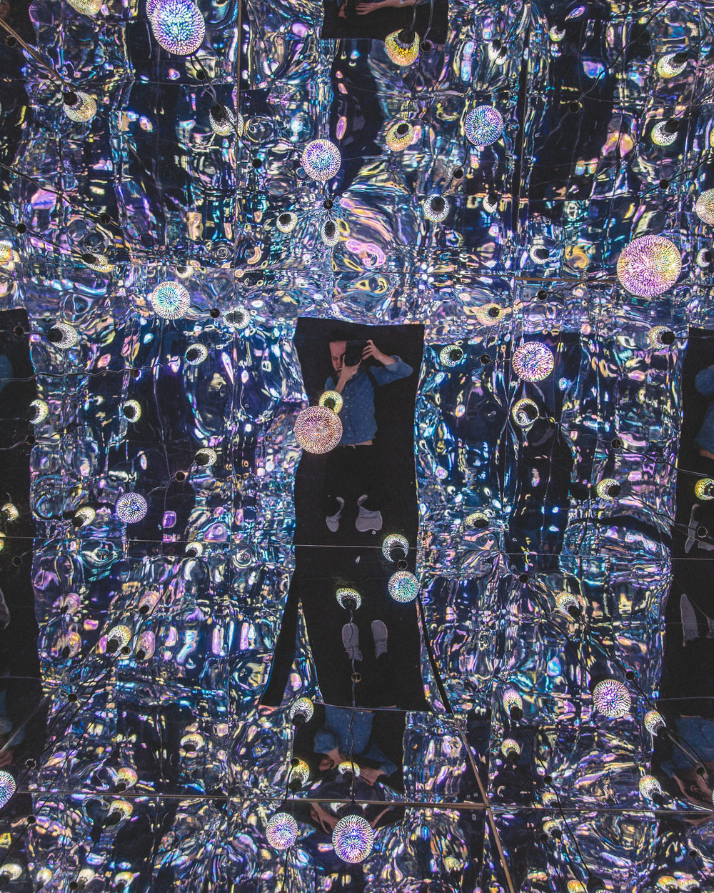
 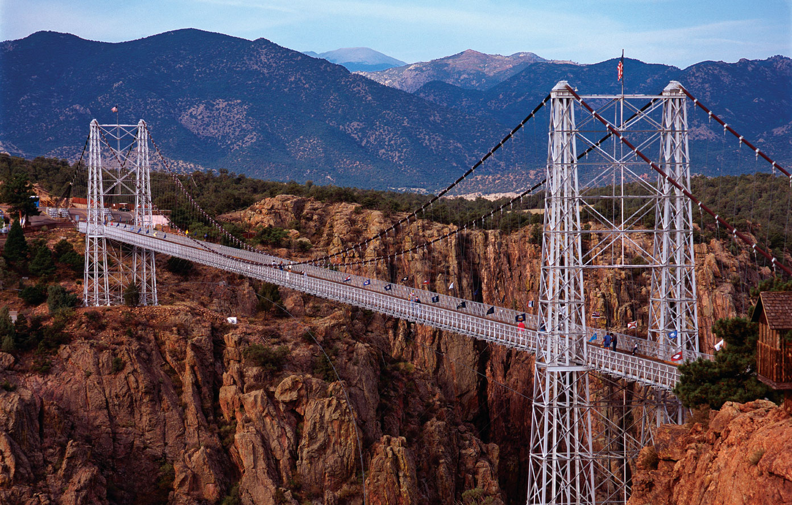
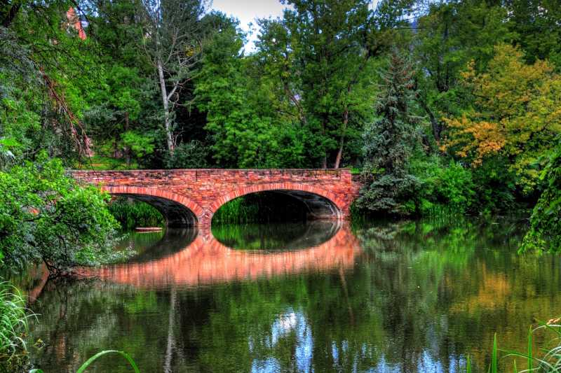
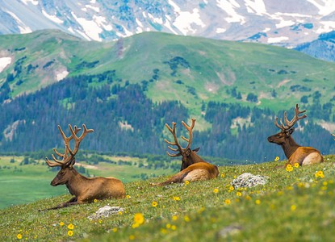
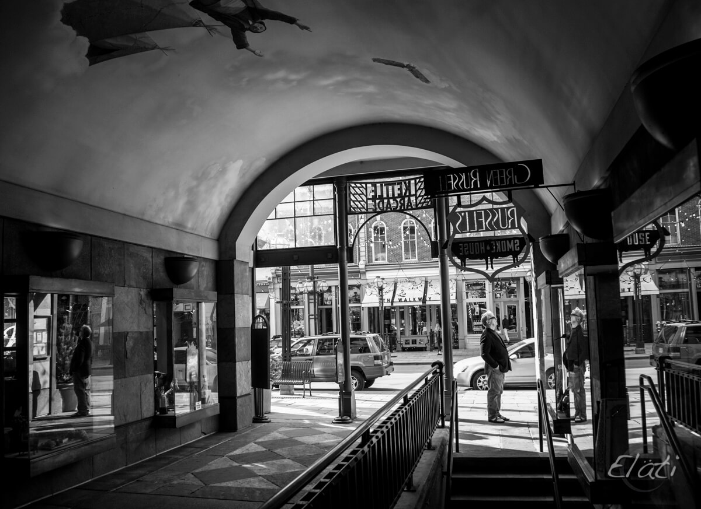
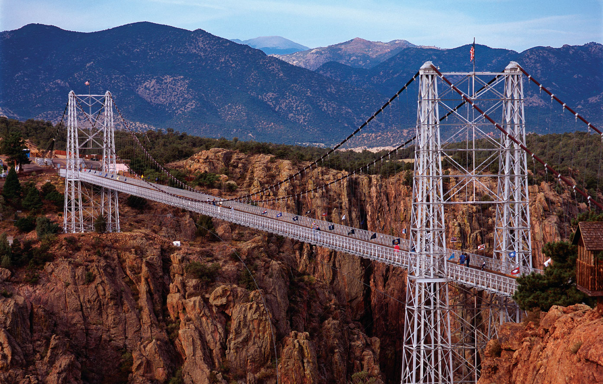
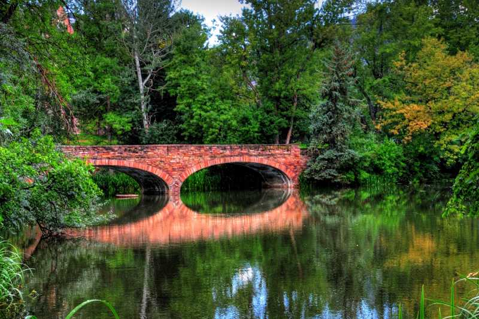
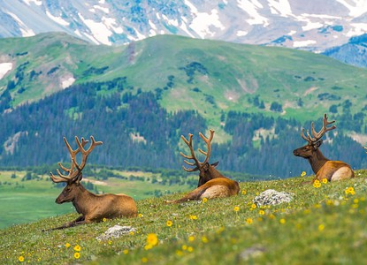
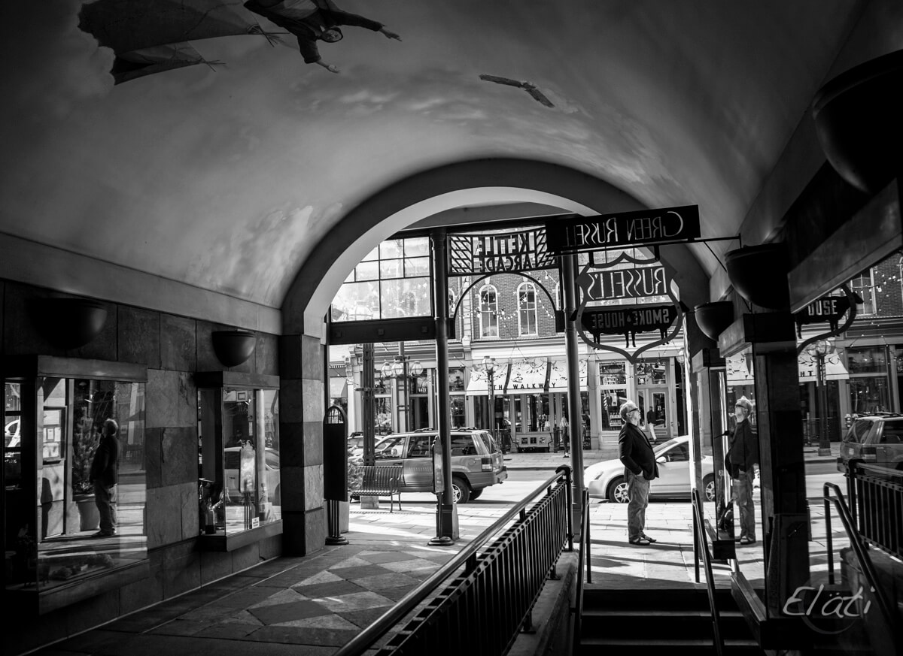